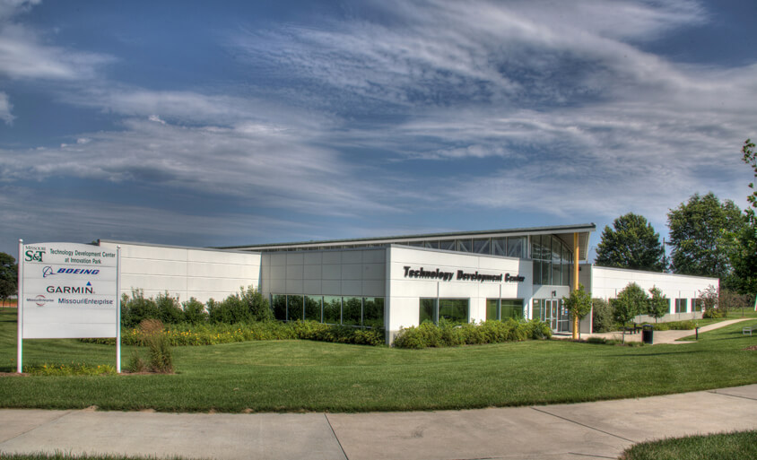
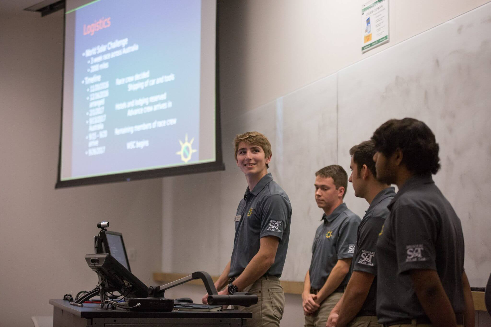
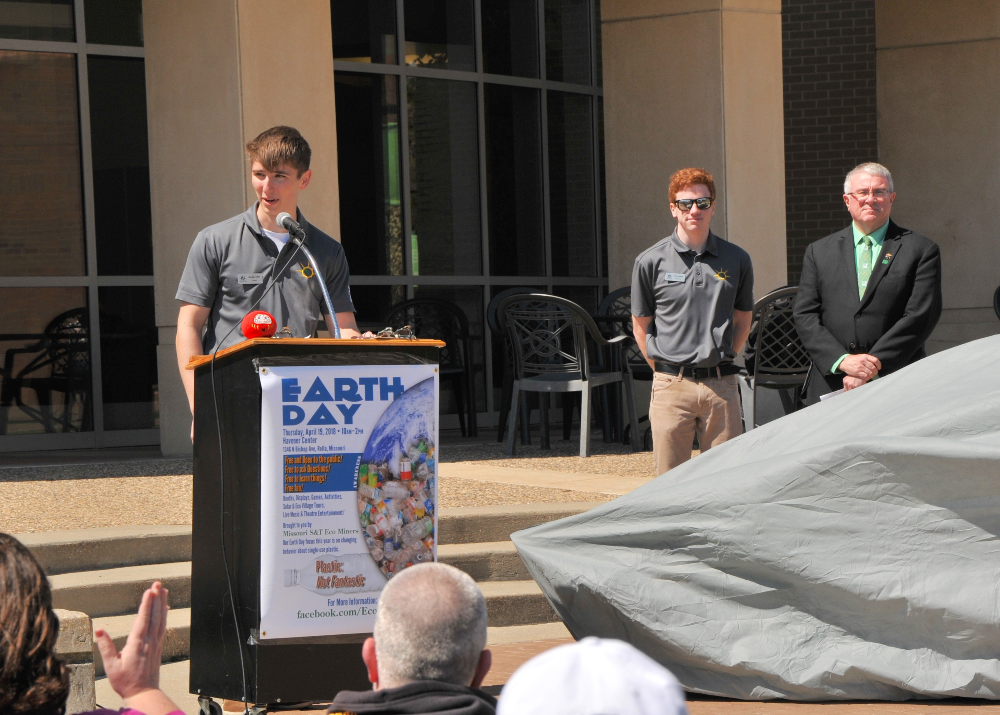
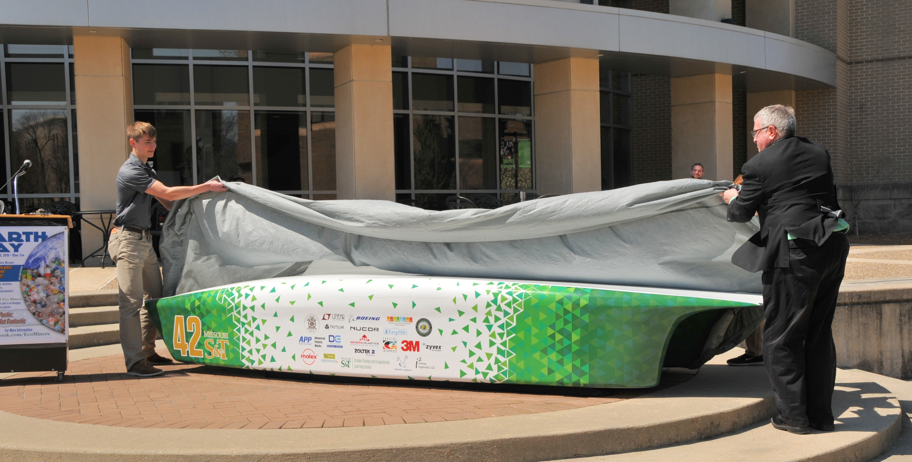
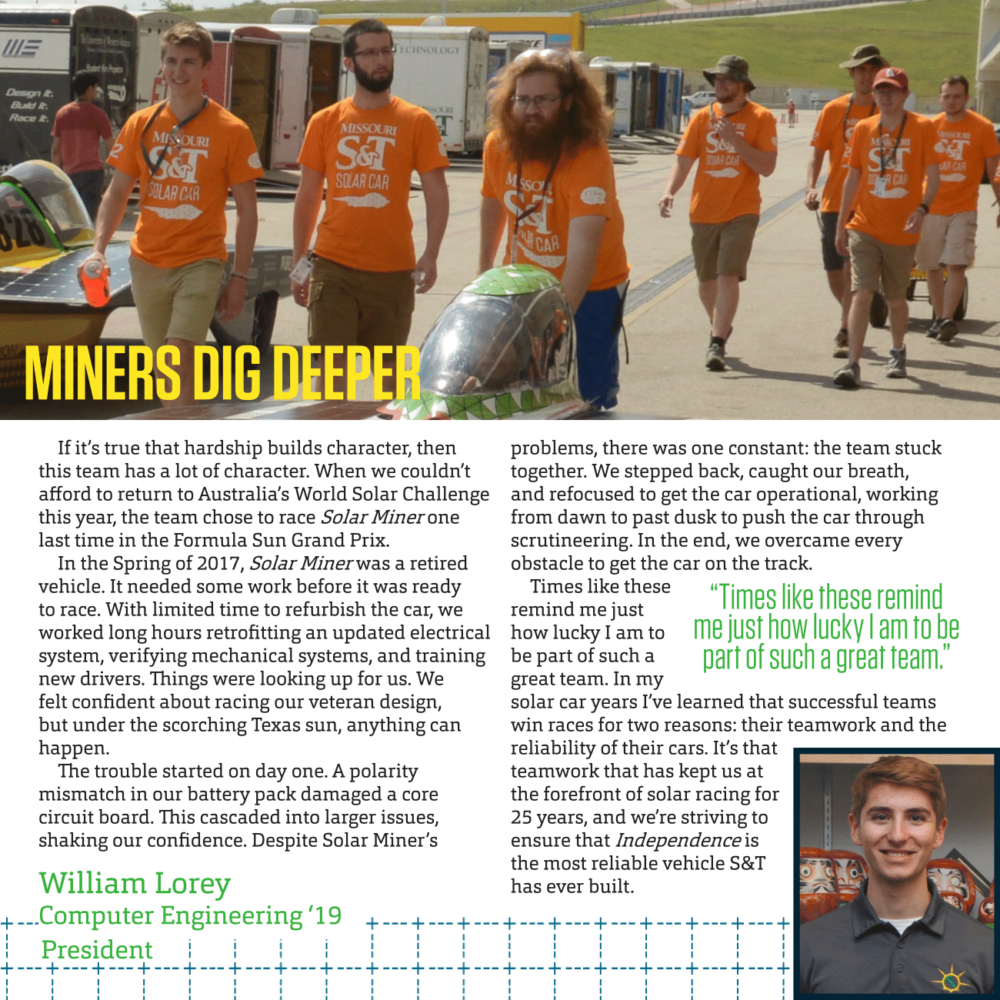
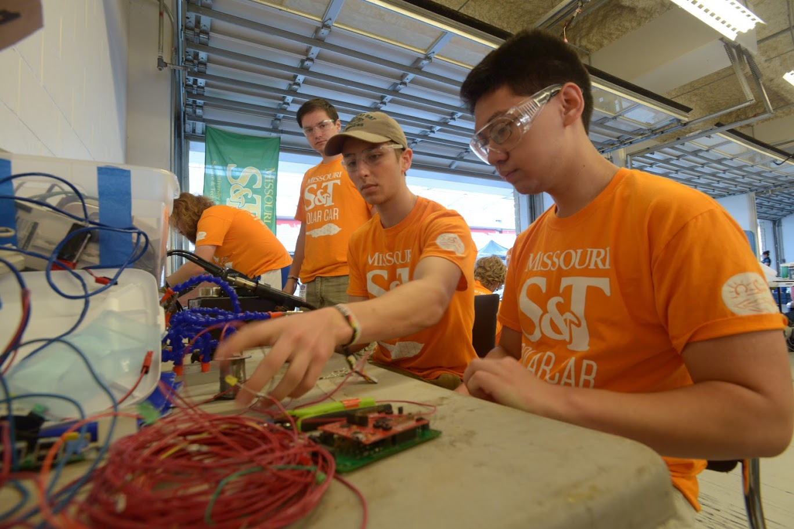
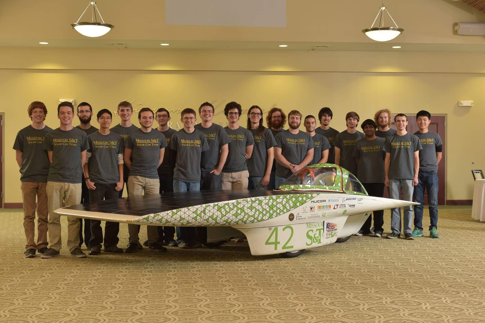
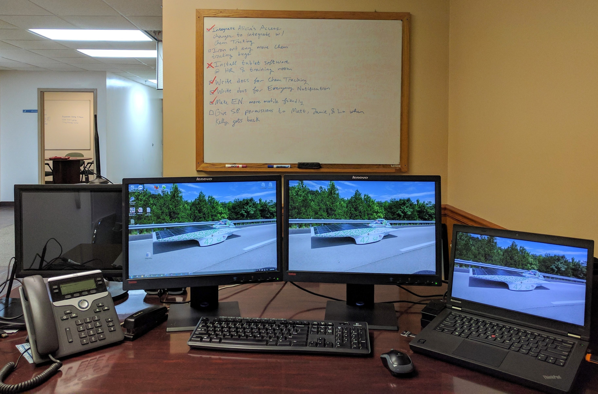
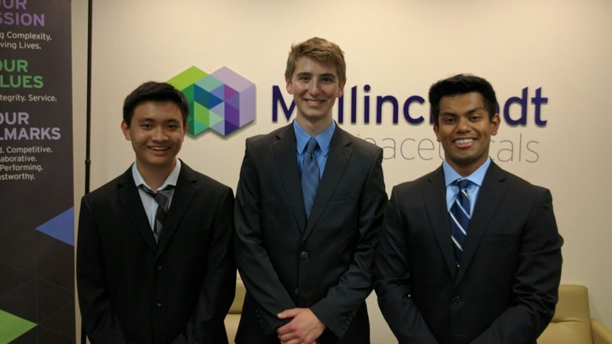

Experience
Garmin
Software Engineering Intern

Garmin's Office in Rolla, MO
This summer, I'm interning as a Software Engineer at Garmin's Rolla office. I work in the Aviation division on OEM flight decks,
primarily writing verification software in C.
Missouri S&T Solar Car Team
President
For the past three years, I've spend the better part of my free time working as a member of the
S&T Solar Car Team, an entirely student run organization
that designs, builds, and races solar powered vehicles. The team competes in races such as the
Formula Sun Grand Prix
(an annual track race) and the
American Solar Challenge
(a biannual, ~2000 mile cross country road race) that
draw competitors from all over the world.

2016 Critical Design Review
Over the past year, I've served as President of the team. My responsibilities have included managing team finances,
creating team-wide budgets and manufacturing timelines, as well as organizing and leading events such as internal design reviews,
recruitment events, drive days, and an
unveiling
for our 2018 vehicle
Independence (the team's first public unveiling since 2010).


Unveiling Independence with S&T Chancellor, Dr. Chris Maples, in Spring 2018
As president, I secured nearly 2.5x growth in donations from on campus organizations. My administration hit major deadlines, including releasing
our Fall mailing, organizing and carrying out our crowdfunding campaign, and unveiling our vehicle, all on time.
I was offered some fun opportunities as President, such as doing an
interview about the American Solar Challenge,
meeting the University of Missouri Board of Curators and System President, and presenting to the S&T Academy of Mechanical and Aerospace Engineers
and Academy of Electrical and Computer Engineers.

The president's letter I wrote for the team's Fall 2017 mailing
When I first joined the team in Fall 2015, I started out as an Electrical/Software Sub-Team member. I worked on the vehicle's embedded sytems
including assembling PCBs, debugging issues, and writing software. I made (a lot) of wires and got to help integrate the electrical systems with the mechanical systems of the car.
By the end of my freshman year, I had ownership of the software of a system that controlled the vehicle's lights, horn, and e-stop.

Working on the electrical system at the Formula Sun Grand Prix '17
As a sophomore, I was elected to the role of Logistics Manager. I led a 5-person sub-team in architecting the team's return to the
World Solar Challenge in 2017. Due to lack of funding, the international competition was put on hold in favor of a less expensive domestic competition,
but my sub-team laid valuable groundwork for competing internationally in the future. Throughout the year in preparation, we gathered copious
information about racing in the Australian Outback (where the World Solar Challenge is held), built relationships with international logistics companies,
and became familiar with international shipping regulations.
While serving as President during my junior year, when I wasn't working on administrative tasks, I designed and implemented a hardware and software driver interface system that
took inputs from the driver to control the car. The board controlled two motors, driver communication, regenerative braking, and the driver display.
It was a fun project to work on, and was my first hardware design.

The Team with Solar Miner in 2016
Being a member of the Solar Car Team has been integral to my college experience. It helped guide me towards finding what I'm passionate about and has helped
me grow as an engineer and as a leader.
LMI Aerospace
.NET Developer Intern
Following my sophomore year in college, I worked for the aerospace contractor LMI Aerospace in Cuba, Missouri. The plant I was
located at specialized in metal finishing and was home to over 130 employees. My role as the facility's sole developer was to
maintain the plant's IT infrastructure and implement new features to the system as needed, mainly using .NET technologies.

Battlestation
In addition to maintaining and adding new features to existing .NET systems, I created a few stand-alone applications. One
was a web based emergency alert system that played emergency recordings over the plant's PA system. These recordings could
be triggered from any device on the network. Another application I build was a chemical tracking system. This maintained an
inventory of chemicals as they came into the facility and kicked off automatic notifications based on the chemical expiration
dates and their usage.

The St. Louis IT Common Services Interns
The summer after my freshman year I interned in Information Technology at Boeing. My team maintained software development tools
used by the company's IT workforce including GitLab, Team Foundation Server, and Visual Studio. Most notably during my time at the company, myself and
a team of Boeing interns in St. Louis (pictured above) were tasked with finding a way to leverage innovation in our department,
IT Common Services (ITCS). Competing against another team in Seattle, we designed and built a social network for aggregating and cultivating
innovation from IT employees. We presented our solution to our director and his leadership team and won the competition.